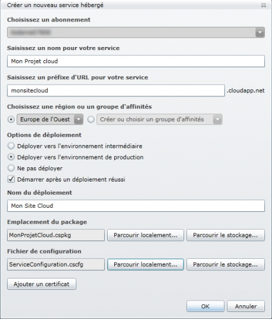
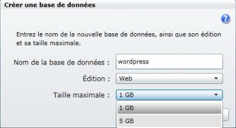
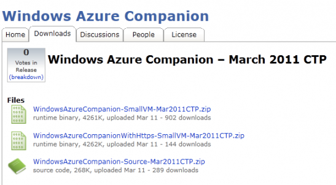

Hébergez vos projets web dans le cloud avec Windows Azure
Vous entendez de plus en plus parler du "cloud" et souhaitez comprendre ce que cette appellation désigne ? Vous souhaitez que votre site soit accessible en ligne sans avoir à vous préoccuper des capacités de votre serveur ? Alors ce tutoriel est là pour vous aider. Windows Azure est la plateforme d’hébergement cloud proposée par Microsoft. Vous découvrirez ici le principe de cloud computing et ce qu'il peut vous apporter. Vous verrez également comment fonctionne cette plateforme, et apprendrez à l’utiliser pour héberger vos propres applications.
Très vite, vous constaterez les avantages de Windows Azure : développer des applications web performantes sans avoir à vous préoccuper de la gestion d’un ou plusieurs serveurs, avoir la certitude que votre application résiste à la montée en charge et soit toujours disponible pour vos utilisateurs… Des hypothèses qui donnent envie, avouez ! ;)
Vous voici prêts à vous lancer dans la découverte de Windows Azure ! Ce premier chapitre sera entièrement théorique. Le but est pour l’instant de bien comprendre comment fonctionne Azure, et quels en sont les avantages.
Commençons par répondre aux questions que vous devez vous poser : qu'est-ce que Windows Azure ? Et surtout : qu'est-ce que le « cloud » ?
En français, cloud signifie nuage. Vous avez peut-être déjà croisé ce terme, on en entend de plus en plus parler, et pour cause : cela apporte tout un tas d’avantages que nous allons découvrir ensemble. Basiquement, ce qu'on appelle le cloud est un système permettant de faire fonctionner plusieurs serveurs ensemble.
Pour bien comprendre, prenons l'exemple d'un site web classique. Il est hébergé sur un serveur que l'on a choisi pour ses caractéristiques techniques, comme l'espace de stockage du disque dur, la puissance de la base de données, etc. Lorsqu'un visiteur souhaite consulter ce site, il communique directement avec le serveur grâce au réseau Internet.
Ce serveur est installé quelque part dans ce que l'on appelle un datacenter, ou « centre de données » en français. Ce sont des entrepôts adaptés où sont rassemblés des centaines, voire des milliers de serveurs. C'est dans le datacenter appartenant à notre hébergeur que se trouve un serveur précis hébergeant notre site. Les visiteurs communiqueront donc toujours avec la même machine lorsqu'ils souhaiteront consulter le site.
Site avec un hébergement classique
Dans le cas du cloud, la différence est qu'on ne travaillera pas toujours avec le même serveur. Au lieu de dépendre constamment de la même machine, notre site web va être enregistré sur une machine virtuelle, c'est à dire dans un environnement 100% logiciel, indépendant du matériel. C'est un peu comme un système « portable », qui peut être exécuté n'importe où. Imaginez que vous ayez avec vous une sauvegarde de tout ce que vous possédez sur votre ordinateur personnel, et que vous puissiez utiliser cette sauvegarde à partir de n'importe quel autre ordinateur. Vous retrouveriez ainsi tous vos logiciels, fichiers, préférences... jusqu'au fond d'écran de votre bureau ! Ici, il s'agit du même principe. L'ensemble qui permet de faire tourner votre application web est composé de certains programmes (serveur web, programme PHP, etc) et fichiers (les pages de votre site, images, etc). Cet ensemble est installé sur une machine virtuelle, que l'on peut donc utiliser à partir de n'importe quel ordinateur ! Cela vous permet de rendre votre site disponible sur des serveurs différents.
Comment les visiteurs vont trouver mon site si on ignore sur quel serveur il est ?
C'est là qu'entre en scène ce qu'on appelle le cloud. Il s'agit en fait d'un système qui s'étend sur plusieurs datacenters et qui permet de faire fonctionner les différents serveurs ensemble. C'est ce système qui va acheminer les visiteurs jusqu'au bon serveur selon leur demande.
Site avec un hébergement cloud
Et à quoi ça sert d'avoir mon site sur plusieurs serveurs ?
L'intérêt est d'améliorer les performances de votre site. Il sera affiché plus rapidement chez la plupart des visiteurs, parce que plusieurs serveurs travaillent mieux qu'un seul ! Grâce à ce mode de fonctionnement, votre application n'a plus ou presque de limites de performances, les ressources utilisées peuvent évoluer. Bien sûr, avec Windows Azure il est possible d’agir sur toutes ces informations et de les paramétrer, afin d’obtenir un hébergement qui soit personnalisé en fonction de vos besoins. Et c’est justement ce qui fait tout l’intérêt du cloud : vous disposez d’une grande souplesse puisque vous ne dépendez pas d’une seule machine aux caractéristiques bien définies. Vous bénéficiez également de l'étendue de la plateforme Azure à travers le monde. En effet, Microsoft propose pas moins de 6 datacenters dédiés à Windows Azure, répartis à divers endroits du globe. Ainsi, chaque visiteur communiquera sans le savoir avec un serveur situé dans le datacenter le plus proche de lui. Les données lui parviendront donc plus rapidement.
Certains avantages du cloud sont directement liés à la possibilité de pouvoir utiliser plusieurs machines virtuelles sur des serveurs différents. D'autres consistent en une simplification des tâches à effectuer, grâce au fonctionnement de la plateforme Azure, qui gère à votre place la majeure partie des étapes de configuration nécessaires.
Adapter les capacités de l'hébergement à vos besoins réels
Le premier de ces avantages, c’est le fait de pouvoir adapter les capacités matérielles et logicielles à vos besoins réels. Il est ainsi plus facile de faire face à ce qu’on appelle la « montée en charge ».
La montée en charge, c’est tout simplement l’augmentation des performances nécessaires pour faire tourner votre application. Parce que vous avez davantage d’utilisateurs, parce que vous fournissez des services plus nombreux ou plus gourmands en mémoire… Votre application pourra monter en charge progressivement sur le long terme, puisqu’elle gagnera en nombre d’utilisateurs. Mais elle pourra également avoir des « pics » de montée en charge sur des périodes temporaires. Prenez l’exemple d’une boutique en ligne. Vous aurez forcément certaines périodes beaucoup plus actives que d’autres dans l’année, notamment à l’approche des fêtes de fin d’année par exemple. Lors de ces périodes, vous aurez plus de visiteurs, plus de transactions, plus de pages affichées… Votre application sera donc beaucoup plus gourmande en mémoire, bases de données, etc.
Montée en charge d'une application classique
Avec un hébergement classique, si vous souhaitez prévoir ce genre de cas, vous devez payer un serveur suffisamment puissant pour encaisser la montée en charge. Votre application est ainsi capable de résister aux périodes de forte charge, mais le reste du temps vous aurez un « gâchis » de performances, puisque vous n’exploitez pas les pleines capacités du serveur. Vous payez donc un produit que vous n’exploitez pas autant que possible.
Avec Azure, vous pouvez adapter les capacités de votre hébergement à vos besoins en temps réel et donc les réduire lorsque la charge de votre application redescend. Vos dépenses sont alors réduites. Vous êtes également capable de réagir rapidement et facilement à toute montée en charge, prévue comme imprévue. Un hébergement classique vous imposerait de changer de serveur et donc migrer votre application et vos données, ou bien rajouter des serveurs afin de répartir la charge (et donc configurer l’infrastructure réseau permettant à vos serveurs de travailler ensemble correctement). Un hébergement cloud à l’image de Windows Azure vous permet d’augmenter les capacités simplement et rapidement, sans avoir à gérer l’infrastructure ni les serveurs. Vous n’avez à vous préoccuper de rien, sauf de décider qu’il vous faut plus de puissance. En un clin d’œil, votre application est capable de résister à la montée en charge.
Montée en charge d'une application Windows Azure
Assurer la disponibilité de l'application
En plus de la possibilité de faire évoluer facilement les capacités de votre hébergement, Azure vous permet une meilleure stabilité. Travailler avec plusieurs serveurs représente ici une sécurité. En effet, dans le cas d'un hébergement classique, si votre serveur tombe en panne pour une raison ou une autre, plus personne ne pourra accéder à votre site. Il vous faudra attendre que le serveur soit réparé pour que le site soit de nouveau accessible. Avec Azure, si vous utilisez plusieurs serveurs et que l'un d'entre eux vient à tomber en panne, un autre peut prendre le relais automatiquement, sans engendrer d'indisponibilité ni de ralentissement sur votre site.
Vous concentrer sur votre application plutôt que sur l'infrastructure
Enfin, un autre avantage concerne les applications plus conséquentes, celles qui sont trop grosses et trop gourmandes en mémoire pour tenir sur un seul serveur. On ne parle donc pas ici d'un petit site perso, mais plutôt d'une application avec beaucoup d'utilisateurs et de fonctionnalités, suffisamment pour rendre nécessaire l'utilisation de plusieurs serveurs travaillant ensemble constamment.
Ce genre de configuration est tout à fait possible sans avoir recours au cloud, mais elle implique de travailler longuement sur l'infrastructure, la configuration réseau, les logiciels que vous installez sur les différentes machines, les capacités techniques de ces dernières et la façon dont elles vont échanger l'information entre elles. Vous l'aurez compris, c'est quelque chose qui prend beaucoup de temps, et qui demande pas mal de connaissances spécifiques.
L’intérêt d’héberger une application « sur le nuage », c’est que vous n’avez pas à vous préoccuper de l’endroit où elle sera stockée, ni de la façon dont elle sera stockée. Windows Azure gère pour vous l’aspect logiciel, matériel et réseau, et ce même si votre application demande de très fortes ressources matérielles. Vous n’avez qu’à consacrer votre temps à votre application en elle-même. Vous gérez le « quoi ». Azure gère le « où » et le « comment ».
En conclusion, votre hébergement cloud sur Azure vous permet :
Une plus grande réactivité : vous pouvez faire évoluer les capacités de votre hébergement très rapidement, à la demande.
Des économies : vous n'utilisez (et ne payez) que les ressources dont vous avez réellement besoin.
Une meilleure stabilité : vous êtes à l'abri si un serveur vient à planter.
Un gain de temps : vous pouvez vous concentrer sur votre application et vos données plutôt que sur l’infrastructure.
Nous l’avons vu, Windows Azure est une plateforme dédiée à l’hébergement cloud proposé par Microsoft. On en comprend le but, mais en pratique : comment cela fonctionne ?
Windows Azure rassemble plusieurs services pouvant travailler ensemble ou indépendamment, chacun ayant un rôle précis :
Windows Azure : principal composant de la plateforme Azure, il s’agit en fait d’un système d’exploitation, adapté au cloud et installé sur les serveurs de Microsoft.
SQL Azure : il s’agit de la version cloud du SGBD de Microsoft, SQL Server.
Azure AppFabric : fournit les outils pour créer des applications cloud avec des fonctionnalités avancées, ou des applications « hybrides » exécutées en partie sur le cloud et en partie sur serveur dédié ou privé.
Windows Azure
Comme tout système d’exploitation, il permet d’utiliser le matériel mis à disposition sans avoir à se préoccuper des caractéristiques techniques ni de l’infrastructure. Il fournit ce qu’on appelle une « abstraction » de l’infrastructure. Le rôle de Windows Azure est de gérer un système pouvant s’étendre à plusieurs serveurs fonctionnant ensemble (c’est ce qu’on appelle le cloud), afin de :
stocker des données
exécuter des applications
Ce système fournit deux services principaux, indépendants l’un de l’autre : Compute et Storage.
Compute : service d’exécution
Ce service se base sur des rôles. Les rôles sont en quelque sorte des applications que l'on va créer sur notre plateforme Azure. Il existe deux types de rôles :
Les Web Role : comme leur nom l’indique, ce sont des applications dont le but est d’interagir avec des utilisateurs via le web. Par exemple, un site internet, une boutique en ligne ou une interface utilisateur sont des Web Role.
Les Worker Roles : ceux-là ne sont pas faits pour être en interaction avec l’utilisateur, mais plutôt pour effectuer des tâches de fond, comme par exemple de la manipulation de fichiers.
Pour un site simple, on aura simplement besoin d'un Web Role. Mais selon les besoins, il peut arriver qu'un Web Role communique avec un Worker Role pour lui envoyer des instructions.
Prenons l'exemple d'une application web destinée à gérer des fichiers à distance, via une interface dans votre navigateur. Cette interface serait basée sur un Web Role, vous permettant de créer tout ce que verront vos utilisateurs. Par contre, le travail effectué par l'application étant essentiellement de la manipulation de fichiers (renommer un dossier, déplacer ou supprimer un fichier, envoyer de nouveaux fichiers sur le serveur, etc), il sera effectué par un Worker Role, qui recevra ses ordres directement du Web Role.
Pour savoir tirer parti de Windows Azure au maximum, l’essentiel est de comprendre le fonctionnement des rôles. Un rôle s’exécute en fait dans une machine virtuelle, et non pas directement sur un serveur physique. Cette machine virtuelle peut être installée à l'identique sur plusieurs serveurs différents, ce qu’on appelle des instances. Multiplier le nombre d’instances d’un même rôle revient à améliorer ses performances. Un peu comme si vous aviez plusieurs ouvriers travaillant ensemble à la même tâche plutôt qu’un seul : le travail est effectué plus rapidement. Pour chaque rôle, on pourra donc décider du nombre d’instances que l’on veut déployer, en fonction des besoins. Vous pourrez en ajouter ou en enlever chaque fois que nécessaire, afin d’adapter les ressources dont vous disposez à la charge réellement demandée par votre application.
Storage : service de stockage de données
Le service de storage est donc la partie du système Windows Azure qui va s'occuper de stocker des données. Il fonctionne via plusieurs outils, adaptés aux différents types de données que l'on peut manipuler :
Blobs : stockage de fichiers.
Tables : enregistrement de données sous la forme nom / valeur.
Queues : transmission d’informations entre rôles (ex : instructions données à un worker role par un web role).
SQL Azure
C'est l'équivalent cloud du SGBDMicrosoft SQL Server. À quelques différences près, le fonctionnement est identique à celui d'une base de données classique via SQL Server. La principale nouveauté est que vous bénéficiez ici des avantages du cloud Azure :
Souplesse : vous pouvez faire varier la taille de la base de données utilisée pour adapter vos dépenses à vos besoins.
Réplication : de la même manière que la multiplication des instances pour un rôle, la réplication vous permet d'avoir plusieurs copies de votre base de données, qui travaillent ensemble. Vous gagnez ainsi en rapidité et en stabilité.
Sauvegardes automatiques : plus besoin de sauvegarder vous-même votre base de données, SQL Azure s'en charge pour vous !
Azure AppFabric
Azure AppFabric permet la création d'applications cloud avec des fonctionnalités avancées, ou la création d'applications "hybrides", c'est-à-dire exécutées en partie sur le cloud et en partie sur serveur dédié ou privé.
On l'a dit, le concept de l'hébergement cloud, c'est d'adapter votre consommation logicielle et matérielle à vos besoins réels. Le but étant évidemment de ne payer que ce dont vous avez besoin, ni plus ni moins. La plateforme Windows Azure vous permet de payer à l'usage ou bien de souscrire à un abonnement. Le paiement à l'usage vous permettra d'ajuster en temps réel les ressources que vous utilisez, et donc votre facture. Les abonnements, moins flexibles, représentent cependant une réduction pouvant aller jusqu'à 20% du prix, ce qui n'est pas négligeable. ^^
Paiement à l'usage
Windows Azure
Calcul
Très petite instance : 0,0355 € par heure
Petite instance (par défaut) : 0,0852 € par heure
Instance moyenne : 0,1703 € par heure
Instance large : 0,3405 € par heure
Instance extra-large : 0,6809 € par heure
Réseau virtuel
Windows Azure Connect - Gratuit pendant la version préliminaire CTP
Stockage
0,1064 € par gigaoctet et par mois
0,0071 € pour 10 000 transactions de stockage
Réseau de distribution de contenu
0,1064 € par gigaoctet pour les transferts de données depuis l'Europe et l'Amérique du Nord
0,1419 € par gigaoctet pour les transferts de données depuis tout autre pays
0,0071 € pour 10 000 transactions
Calcul
Très petite instance : 0,0355 € par heure
Petite instance (par défaut) : 0,0852 € par heure
Instance moyenne : 0,1703 € par heure
Instance large : 0,3405 € par heure
Instance extra-large : 0,6809 € par heure
Réseau virtuel
Windows Azure Connect - Gratuit pendant la version préliminaire CTP
Stockage
0,1064 € par gigaoctet et par mois
0,0071 € pour 10 000 transactions de stockage
Réseau de distribution de contenu
0,1064 € par gigaoctet pour les transferts de données depuis l'Europe et l'Amérique du Nord
0,1419 € par gigaoctet pour les transferts de données depuis tout autre pays
0,0071 € pour 10 000 transactions
Azure AppFabric
Access Control
1,4114 € pour 100 000 transactions
Service Bus
2,8298 € par connexion avec paiement à l'utilisation
Pack de 5 connexions 7,0566 €
Pack de 25 connexions 35,2827 €
Pack de 100 connexions 141,1308 €
Pack de 500 connexions 705,654 €
Mise en cache
128 Mo de cache pour 31,914 €
256 Mo de cache pour 39,006 €
512 Mo de cache pour 53,19 €
1 Go de cache pour 78,012 €
2 Go de cache pour 127,656 €
4 Go de cache pour 230,49 €
Access Control
1,4114 € pour 100 000 transactions
Service Bus
2,8298 € par connexion avec paiement à l'utilisation
Pack de 5 connexions 7,0566 €
Pack de 25 connexions 35,2827 €
Pack de 100 connexions 141,1308 €
Pack de 500 connexions 705,654 €
Mise en cache
128 Mo de cache pour 31,914 €
256 Mo de cache pour 39,006 €
512 Mo de cache pour 53,19 €
1 Go de cache pour 78,012 €
2 Go de cache pour 127,656 €
4 Go de cache pour 230,49 €
SQL Azure
Web Edition
7,085 € par base de données, jusqu'à 1 Go par mois
35,425 € par base de données, jusqu'à 5 Go par mois
Business Edition
70,913 € par base de données, jusqu'à 10 Go par mois
141,826 € par base de données, jusqu'à 20 Go par mois
212,739 € par base de données, jusqu'à 30 Go par mois
283,652 € par base de données, jusqu'à 40 Go par mois
354,565 € par base de données, jusqu'à 50 Go par mois
Web Edition
7,085 € par base de données, jusqu'à 1 Go par mois
35,425 € par base de données, jusqu'à 5 Go par mois
Business Edition
70,913 € par base de données, jusqu'à 10 Go par mois
141,826 € par base de données, jusqu'à 20 Go par mois
212,739 € par base de données, jusqu'à 30 Go par mois
283,652 € par base de données, jusqu'à 40 Go par mois
354,565 € par base de données, jusqu'à 50 Go par mois
Transfert de données
Régions Amérique du Nord et Europe
0,071 € par gigaoctet entrant
0,1064 € par gigaoctet sortant
Région Asie-Pacifique
0,071 € par gigaoctet entrant
0,1419 € par gigaoctet sortant
Régions Amérique du Nord et Europe
0,071 € par gigaoctet entrant
0,1064 € par gigaoctet sortant
Région Asie-Pacifique
0,071 € par gigaoctet entrant
0,1419 € par gigaoctet sortant
Abonnements
Selon l'usage que vous souhaitez faire du cloud, Microsoft propose différents abonnements. Si vous dépassez les limites de capacités de l'abonnement pour lequel vous avez opté, il vous faudra payer un supplément basé sur la tarification à l'usage.
Pack Windows Azure
C'est le pack de base, qui permet de déployer des applications sur le cloud. Attention, il ne comprend pas de base de données, si vous souhaitez en utiliser une il vous faudra payer un supplément. À partir de 51,06 € / mois. Valable 6 mois renouvelables une fois.
Ce pack vous permet un accès à une base de données SQL Azure. Vous pourrez le coupler avec le pack Windows Azure, ou l'utiliser seul si votre but est simplement de stocker des données sur le cloud et non une application complète. À partir de 56,73 € / mois. Valable 6 mois renouvelables une fois.
Vous savez maintenant ce qu'est le cloud, et comment fonctionne Windows Azure ! Nous allons pouvoir passer aux choses sérieuses dès le prochain chapitre.
Vous avez maintenant une meilleure idée de ce qu'est Windows Azure, et de ce que l'hébergement cloud va vous permettre. Avant de mettre tout cela en pratique, il vous reste à installer les outils nécessaires et à créer votre compte sur la plateforme Azure.
Afin de pouvoir déployer vos projets sur le cloud Azure, il vous faudra un compte. Il en existe deux types : payant, ou gratuit pour 30 jours. Pour débuter je vous conseille le compte gratuit pour 30 jours, cela vous permettra de tester la plateforme Azure dans un premier temps. Vous pourrez ensuite passer sur un format payant si vous souhaitez aller plus loin.
Comptes Azure payants
Les comptes payants sont répartis en plusieurs offres que nous avons étudiées à la fin du chapitre précédent. Vous pourrez souscrire à l'une de ces offres en suivant ce lien.
Comptes Azure gratuits 30 jours
Afin de vous permettre de tester Windows Azure, Microsoft a mis en place des comptes gratuits pour une durée de 30 jours, sans carte bleue nécessaire. Vous pouvez souscrire à cette offre en vous rendant sur http://windowsazurepass.com/.
Le site vous demande votre pays, ainsi qu'un code promo. Saisissez le code MSCLOUD et validez le formulaire.
Il vous faut ensuite vous connecter avec un compte Windows Live ID. Si vous avez déjà un compte Hotmail, Messenger ou autre service Microsoft, vous pouvez vous identifier avec. Dans le cas contraire il va vous falloir créer un compte. Utilisez pour cela le bouton Sign Up.
Vous devrez ensuite entrer vos coordonnées, et accepter les conditions d'utilisations de la plateforme Windows Azure.
Une fois que vous avez envoyé vos coordonnées et validé, une dernière page vous confirme que votre demande a bien été enregistrée. Il ne vous reste plus qu'à attendre que votre compte soit activé, ce qui peut prendre jusqu'à trois jours d'après Microsoft. En pratique, cela est souvent réalisé plus rapidement.
Une fois inscrit, vous pouvez accéder à la plateforme Windows Azure en vous rendant à l'adresse windows.azure.com et en vous connectant avec votre compte Windows Live. La plateforme va vous permettre de gérer votre compte ainsi que les différents projets que vous hébergerez sur Azure. Nous allons découvrir ensemble l'interface de cette plateforme en détaillant les différentes sections, afin que vous ayez un petit aperçu de ce qu'elle a à vous offrir.
L'interface
Avant de voir en détail les différentes parties de l'interface, vérifiez en quelle langue est configurée votre plateforme Azure. Si elle n'est pas déjà en français, vous pouvez changer cela à l'aide de la liste déroulante située tout en haut dans la barre d'outils.
Nous allons maintenant pouvoir passer en revue les parties principales de l'interface :
La barre d'outils : Située tout en haut, elle vous permet d'accéder rapidement aux fonctionnalités principales, selon la page sur laquelle vous vous trouvez. Remarquez également le lien Billing en haut à droite, qui vous permet d'accéder à l'espace facturation.
La barre latérale : Elle affiche dans sa partie supérieure un menu différent selon la page sur laquelle vous vous trouvez, et dans sa partie inférieure le menu principal, qui vous permet de naviguer entre les différentes zones d'administration proposées par la plateforme :
Accueil : Retour à l'accueil de la plateforme
Services hébergés, Comptes de stockage et CDN : État du compte et gestion des services hébergés. C'est cette section que vous utiliserez le plus souvent.
Base de données : Gestion des bases de données SQL Azure.
Génération d'un rapport : Fournit des rapports sur les bugs et l'utilisation des applications et données hébergées sur votre compte Azure.
Bus des services, Contrôle d'accès et Cache : Permet d'utiliser les différentes fonctionnalités de Azure AppFabric.
Réseau virtuel : Permet d'utiliser plusieurs fonctionnalités réseau comme Windows Azure Connect, qui permet de créer une connexion réseau entre vos Web Roles Azure et un serveur situé en dehors du cloud.
La zone de travail : Sur chaque page, elle affichera les informations principales.
Accueil
La page d'accueil met en avant les différentes rubriques d'aide qui vous sont proposées. Le but est de vous accompagner au maximum dans votre utilisation de Windows Azure. Certaines pages d'aides sont directement listées au centre de la fenêtre, dans la zone de travail. D'autres sont regroupées au sein de thématiques que vous pourrez parcourir à l'aide du menu de la barre latérale.
La barre d'outils vous propose plusieurs options :
Neouveau service hébergé : Héberger un nouveau projet sur votre compte Azure.
Nouveau compte de stockage : Nouveau compte de stockage, vous permettant d'utiliser les fonctionnalités du service Azure Storage.
Nouveau serveur de base de données : Création d'une nouvelle base de données.
Connecter : Nouvelle connexion Azure Connect.
Services hébergés, Comptes de stockage et CDN
Cette partie vous permet d'accéder aux fonctionnalités qui composent le système d'exploitation Windows Azure. C'est-à-dire principalement les services Compute et Storage, dont nous avons parlé au cours du chapitre précédent. C'est ici que vous passerez le plus clair de votre temps.
Voici les différentes sections auxquelles vous avez accès dans cette partie :
Intégrité du déploiement : État de santé de votre compte Azure et des applications hébergées.
Groupes d'affinités : Permet de créer des groupes pour rassembler différentes applications travaillant ensemble.
Services hébergés : Gestion des différents projets hébergés sur votre compte Azure.
Comptes de stockage : Gestion des comptes Azure Storage.
Gestion des utilisateurs : Permet de donner l'accès à votre compte à plusieurs utilisateurs.
Base de données
Cette section vous permet de gérer vos bases de données SQL Azure. Pour créer une ou plusieurs bases de données, il vous faut d'abord créer un serveur de bases de données. Basiquement, cela revient à installer SQL Azure sur une machine virtuelle qui sera chargée d'héberger vos bases de données.
Pour chaque serveur, vous devrez préciser un nom et un mot de passe pour l'administrateur. Vous pourrez également choisir où vous souhaitez héberger votre base de données, c'est-à-dire dans quel datacenter. Faites le choix en fonction de vos utilisateurs : si votre site est destiné à des utilisateurs français en majorité, alors le meilleur choix est sans doute Europe de l'Ouest.
Pour chaque base de données, vous devrez choisir un nom et une taille, adaptée à ce que vous souhaitez stocker dessus.
Microsoft Visual Studio est un ensemble de logiciels permettant de programmer sur Windows, adapté aux technologies Microsoft telles ASP.NET, Visual Basic, C#...
Windows Azure est un produit Microsoft, mais c’est aussi une plateforme ouverte qui vous permet de programmer avec d'autres langages comme PHP, Java ou Ruby. Il est également possible de développer avec d'autres logiciels que Visual Studio, notamment l'éditeur Eclipse bien connu des développeurs Java. Pour l'instant, nous allons utiliser Visual Studio pour développer et déployer des applications à destination de la plateforme Azure. Je vous propose donc de l'installer dès maintenant.
Visual Studio est un logiciel professionnel. Si vous n'avez pas la possibilité de l'acheter dans l'immédiat, Microsoft fournit des versions Express, qui sont limitées mais gratuites. La version qui vous intéresse est Microsoft Visual Web Developer Express. En cliquant sur le lien précédent vous pourrez vous rendre à la page de téléchargement.
Pour pouvoir installer le logiciel, vous devez utiliser Web Platform Installer, un programme conçu par Microsoft pour faciliter l'installation de certains de ses produits. Cliquez donc sur le bouton « Get the Web Platform Installer ».
Lancez ensuite le programme d'installation que vous venez de télécharger. Après avoir accepté les conditions d'utilisation, Web Platform Installer démarre et vous propose automatiquement d'installer Visual Web Developer.
Installation de Visual Web Developer
Une fois l'installation terminée, vous pouvez lancer Visual Web Developer et créer vos projets Azure !
Dans ce chapitre nous n'allons pas programmer, mais il est important de voir comment est constituée une application type, et comment la déployer sur le cloud Azure. Nous allons donc créer un projet dans Visual Web Developer, et tester son déploiement sur le cloud Azure. Pour débuter un nouveau projet, vous pouvez cliquer sur le lien « Nouveau Projet » en haut de la page de démarrage, ou bien utiliser l'habituelle commande « Fichier > Nouveau Projet ».
A gauche, vous pouvez choisir un modèle sur lequel baser votre nouveau projet. Sélectionnez le modèle « Cloud » dans la catégorie Visual C#. Ce modèle correspond à un projet destiné à être déployé sur Windows Azure. En bas de la fenêtre, vous pouvez donner un nom à votre projet, et sélectionner l'emplacement où celui-ci sera enregistré.
Lorsque vous validez, une nouvelle fenêtre s'ouvre, vous proposant d'ajouter un ou plusieurs rôles à votre projet. Ces rôles correspondent à ce que nous avons appris dans le chapitre précédent à savoir des Web roles ou Worker Roles. A vous de choisir le ou les plus approprié(s) selon le type de projet que vous souhaitez créer.
Pour l'instant, nous allons baser notre projet sur un Web Role ASP.NET. Ce type de rôle est l'exemple le plus représentatif puisqu'il repose entièrement sur les technologies Microsoft, qui s'adaptent parfaitement à Windows Azure. Une fois le rôle ajouté au sein de votre projet Windows Azure, vous pouvez le renommer si vous le souhaitez, puis cliquer sur OK.
Cela va créer votre projet et l'ouvrir directement dans Visual Web Developer, où vous pourrez le modifier.
Vous pouvez constater qu'un tas de fichiers et dossiers ont déjà été créés par Visual Web Developer. Rassurez-vous, nous n'allons pas tous les modifier. Pour l'instant, l'important pour nous est surtout d'apprendre à tester notre projet et à l'héberger sur Azure.
Parmi tous ces fichiers, certains sont plus importants que d'autres. Vous remarquerez notamment le fichier ServiceConfiguration.cscfg. Il permet de modifier la configuration de notre projet Azure, et notamment le nombre d'instances que nous souhaitons déployer pour chaque rôle.
Il vous suffit donc de changer la valeur de l'attribut count dans la balise Instances (ligne 4) pour augmenter ou diminuer le nombre d'instances qui seront déployées sur votre hébergement Azure. Je vous propose de tester avec 2 instances, ce qui est le minimum si l'on veut bénéficier des avantages de l'hébergement cloud.
Tester votre projet
Vous pouvez dès à présent tester votre projet en local, sur votre ordinateur. Cette étape est recommandée avant de l'envoyer sur le cloud, afin de vous assurer que tout fonctionne correctement. Pour tester, rien de plus simple : il vous suffit d'appuyer sur la touche F5 de votre clavier.
Cette opération est un peu longue, mais pas de panique ! Au bout de quelques secondes votre navigateur devrait ouvrir automatiquement un nouvel onglet, vous présentant votre Web Role. Vous devriez voir quelque chose ressemblant à ceci :
Votre application fonctionne, il ne vous reste plus qu'à l'envoyer sur le cloud Azure !
Déployer votre projet
Pour déployer notre projet, nous allons procéder en deux étapes. Premièrement nous allons créer un « package », c'est-à-dire des fichiers regroupant toutes les données de notre projet. Puis nous l'enverrons sur Azure directement à partir de la plateforme en ligne.
Toujours dans Visual Web Developer, faites un clic droit sur le nom de votre projet et choisissez l'option Publier.
Une fenêtre s'ouvre et vous demande comment vous souhaitez déployer votre projet. Tout en haut, sélectionnez « Créer un package de services uniquement ».
Visual Web Developer va automatiquement rassembler tous les éléments nécessaires au déploiement de votre projet dans deux fichiers :
VotreProjet.cspkg
ServiceConfiguration.cscfg
Ce sont ces fichiers que nous allons envoyer sur votre compte Azure.
Pour cela, connectez-vous à la plateforme Azure à l'adresse windows.azure.com. Depuis la page d'accueil, cliquez sur le bouton Nouveau service hébergé situé dans la barre d'outils en haut.
Une fenêtre s'ouvre, vous invitant à personnaliser le service que vous allez créer, qui correspond à votre projet créé sous Visual Web Developer.

Vous pouvez tout d'abord donner un nom à votre projet, et choisir l'URL qui permettra d'y accéder. Celle-ci se terminera toujours par cloudapp.net, ce que vous choisissez n'est que le préfixe qui viendra devant. Par exemple monsitesurlecloud.cloudapp.net. Choisissez ensuite une région. Cela correspond au datacenter dans lequel vous souhaitez héberger votre projet. Aucune différence en terme de fonctionnalités, mais il vaut mieux choisir le plus proche de vos visiteurs. Si votre site est amené à être consulté majoritairement par des utilisateurs français, l'idéal est la région « Europe de l'Ouest ». Puis, choisissez la manière dont vous souhaitez déployer votre projet : en production ou en test (« environnement intermédiaire »). L'avantage de l'environnement de test est qu'il ne sera pas possible d'accéder au site sans utiliser une url unique, créée automatiquement par Azure, et inconnue de vos visiteurs. De quoi vous permettre de tester votre site avant de le rendre public. Enfin, choisissez un nom pour le déploiement. Ce nom sera donné à la « version » du projet que vous vous apprêtez à publier. À l'avenir, si vous souhaitez le modifier sur votre ordinateur et le publier de nouveau, Azure créera un nouveau déploiement et donc une nouvelle version du projet, plutôt que de remplacer l'ancienne. Le fait de nommer vos déploiements permet donc de ne pas vous mélanger les pinceaux.
Il ne vous reste plus qu'à cibler les deux fichiers cspkg et cscfg qui vont être envoyés sur la plateforme Azure, puis utilisés pour déployer votre projet.
Une fois que cela est fait, cliquez sur OK.
Il vous faudra patienter quelques minutes, le temps qu'Azure configure votre nouveau projet. En vous rendant dans la section Services hébergés vous devriez voir votre projet et l'état dans lequel il est : d'abord en cours de création, puis « prêt ». À ce moment-là, votre site est accessible en ligne, à partir de l'url que vous avez choisie.
Et voilà, vous êtes inscrit et vous avez installé les logiciels nécessaires. Vous savez également comment déployer vos applications cloud avec Windows Azure.
Il ne vous reste plus qu'à concevoir vos propres applications !
Dans les prochains chapitres nous verrons comment déployer des CMS tels Wordpress et Orchard. Vous pourrez ainsi héberger facilement et rapidement des sites sur Azure, sans la moindre ligne de code !
Maintenant que vous savez comment créer un nouveau projet Windows Azure, il ne vous reste plus qu'à héberger votre propre site !
Quoi de mieux pour débuter qu'un blog ? Nous allons ici profiter de la plateforme bien connue Wordpress, dont l'installation sur Windows Azure est simplifiée au maximum. Vous allez voir qu'il est très facile de créer votre propre blog sur le cloud !
Wordpress est ce qu'on appelle un CMS. En français, cela signifie Système de Gestion de Contenu. Cela désigne un programme prêt à utiliser, qui permet de publier et gérer du contenu sans avoir à programmer la moindre ligne de code. Créé en 2003, Wordpress n'a pas cessé d'évoluer. Il est aujourd'hui l'un des CMS les plus connus et utilisés dans le monde. Principalement pensé pour la création de blogs, il fournit des outils et une interface d'administration adaptés pour rédiger et publier des articles, gérer les commentaires des visiteurs, etc. Un des avantages à utiliser Wordpress est que l'on profite de sa popularité : une grande communauté s'est formée autour de cet outil, si bien qu'il existe de très nombreux thèmes graphiques ou extensions permettant d'ajouter des fonctionnalités au programme d'origine. Il est ainsi très facile de personnaliser complètement son blog, et même de le faire évoluer en intégrant des particularités dignes de sites plus complexes. De plus, son expérience et son grand nombre d'utilisateurs en font un produit mature et stable, avec des évolutions fréquentes.
Bref vous l'aurez compris : si vous souhaitez mettre facilement et simplement en place un blog ou un site perso, vous avez tout à gagner à utiliser Wordpress. Et comme les choses sont bien faites, il existe un moyen simple de le déployer sur Azure !
Avant d'installer Wordpress, nous allons préparer un peu le terrain en configurant notre compte Windows Azure.
Puisque Wordpress vous permet de publier et gérer du contenu, il vous faut une base de données pour enregistrer vos articles, commentaires, utilisateurs et autres données. Il va donc nous falloir créer et configurer cette base de données sur votre hébergement Windows Azure.
Nous allons également créer un compte de stockage avec le système Azure Storage, dont nous avons parlé dans le premier chapitre. Cela va vous permettre de stocker certains fichiers, parmi lesquels les fichiers d'installation dont nous aurons besoin.
Pour cela, la première chose à faire est de vous connecter à la plateforme Windows Azure à l'aide de vos identifiants.
Création de la base de données
Nous allons commencer par créer la base de données. Cliquez sur le bouton Base de données dans le menu de gauche de la plateforme Azure.
Vous arrivez dans l'espace de gestion de vos bases de données SQL Azure.
Création du serveur SQL Azure
Avant de créer une base de données, il vous faut créer un serveur de base de données. En comparaison avec un hébergement classique (non cloud), cela revient à installer le programme qui va gérer vos bases de données : on appelle cela un SGBD. Quelques SGBD connus sont : MySQL, PostgreSQL, Oracle, SQLite, Microsoft SQL Server... et SQL Azure, spécialement conçu pour l'environnement Windows Azure !
Une minute... Selon le premier chapitre de ce tuto, Azure est censé s'occuper de l'installation à ma place, pour me permettre de gagner du temps. En quoi la tâche m'est facilitée si je dois moi-même installer SQL Azure ?
Pas de panique ! Ici on ne va pas mettre les mains dans le cambouis. Effectivement il faut installer un serveur de base de données. Mais cette installation est simplifiée au maximum ! Plutôt que de réaliser l'installation nous-mêmes, nous allons simplement demander à Windows Azure de le faire pour nous. Vous allez voir, c'est un jeu d'enfants. Si vous regardez bien au centre de la fenêtre de votre plateforme Windows Azure, vous pouvez cliquer sur un gros bouton Créer un nouveau serveur SQL Azure.
Lorsque vous cliquez dessus, une fenêtre apparaît, et vous demande tout d'abord de choisir un « abonnement » (« select a subscription » en anglais). Normalement si vous débutez avec Azure, vous ne devriez disposer que d'un seul choix possible. Un abonnement est en fait un compte de facturation Windows Azure. Il est indispensable de rattacher chacun des services que vous utilisez à un compte afin de calculer le montant de votre facture en fonction des ressources que vous utilisez. C'est comme cela que Microsoft peut vous facturer en fonction de la taille des bases de données que vous créez, du volume de fichiers que vous stockez, du nombre de projets que vous hébergez, etc. Par défaut vous ne devriez disposer que d'un seul abonnement. Mais si vous utilisez plusieurs comptes de facturation, attention à ne pas vous tromper !
On vous demande ensuite de choisir une région. Comme dans le chapitre précédent, choisissez la plus appropriée pour votre blog, en fonction du profil de vos visiteurs. Pour la France, préférez « Europe de l'Ouest ».
Puis, il vous faut créer un compte administrateur pour votre serveur. Choisissez-lui un pseudo et un mot de passe.
Dernière chose, vous devez définir des règles d'accès à votre serveur de base de données. Cela permet de limiter l'accès à partir de certaines adresses IP uniquement. Le plus simple reste de sélectionner l'option « Autoriser d'autres services Windows Azure à accéder à ce serveur », qui donnera automatiquement l'accès à vos bases de données à tous vos services Azure, y compris votre futur blog.
Et voilà, vous n'avez plus qu'à cliquer sur le bouton Terminer. Après quelques secondes, votre tout nouveau serveur de base de données est créé ! Si vous regardez bien, vous constaterez qu'il contient déjà une base de données, nommée « master ». Celle-ci est vierge et nous pourrions nous en contenter. Mais je vous recommande d'utiliser une base de données spécialement dédiée à votre futur blog sous Wordpress.
Création de la base de données
Sélectionnez votre serveur puis, dans la barre de menus cliquez sur le bouton Créer pour ajouter une base de données.
Une nouvelle fenêtre s'ouvre, vous demandant d'abord le nom de votre base de données. Nous allons tout simplement la nommer « wordpress ». Puis vous devez sélectionner son type et sa taille. Vous avez le choix entre deux types :
Web : Les tailles proposées sont de 1 GB ou 5 GB
Business : Les tailles proposées varient de 10 à 50 GB
Autant vous dire que pour un simple blog Wordpress, une base de données Web de 1 GB sera amplement suffisante.

Cliquez sur Ok et c'est terminé ! Votre base de données est créée et visible dans la section Base de données de votre plateforme Windows Azure.
Création du compte de stockage
Passons maintenant au compte de stockage, que nous allons créer avec le service Storage de Windows Azure. Pour cela rendez-vous dans la section appropriée en cliquant sur le bouton Services hébergés, comptes de stockage et CDN du menu, puis sur Comptes de stockage.
Vous pouvez ensuite cliquer sur le bouton Nouveau compte de stockage dans la barre de menu en haut. Comme d'habitude, vous voyez apparaître une fenêtre vous demandant plusieurs informations. Vous devez déjà être habitué à certaines : choisir un abonnement, puis une région. Ici vous devez en plus choisir une adresse (URL) à partir de laquelle votre compte de stockage sera accessible.
Cliquez sur Ok, et c'est fait ! Votre compte de stockage est créé et apparaît dans la section concernée de la plateforme.
À présent que nous avons configuré notre compte Windows Azure, il nous faut installer Wordpress. Traditionnellement, cela se fait « à la main » : vous devez télécharger les fichiers source de Wordpress puis les envoyer sur votre serveur, et enfin configurer votre application.
Présentation
Dans le cas de Windows Azure, il existe un outil qui va effectuer la plupart des tâches nécessaires pour nous. Cet outil s'appelle Windows Azure Companion. Dans l'esprit il est assez semblable à Web Platform Installer, que nous avons utilisé dans le chapitre précédent pour installer Visual Web Developer sur notre ordinateur. C'est à dire qu'il vous permet de sélectionner des programmes parmi une liste, et va ensuite se charger de les installer automatiquement. La seule différence entre ces deux outils est qu'on ne les utilise pas dans le même contexte. Si Web Platform Installer est dédié aux programmes pour votre ordinateur, Windows Azure Companion est fait spécialement pour installer des applications web sur Windows Azure.
Windows Azure Companion se comporte comme un projet Azure habituel. C'est à dire que vous devez déployer le projet sur Azure comme nous l'avons fait dans le chapitre précédent, avant de pouvoir l'utiliser. Nous allons donc récupérer le package contenant les fichiers nécessaire, et déployer Windows Azure Companion sur notre compte Azure.
Si j'ai bien compris, au lieu d'installer directement et simplement Wordpress, on va aller télécharger et installer autre chose pour pouvoir enfin installer Wordpress. Pourquoi s'embêter avec ça ?
Parce que vous ne le ferez qu'une fois ! Après avoir mis en place l'outil Windows Azure Companion, celui-ci restera accessible et vous permettra d'installer tout un tas d'applications web de manière automatisée. Quelques exemples des applications proposées :
Drupal
Joomla
Wordpress
PhpBB
PhpMyAdmin
...
Sans compter que pour faire fonctionner une application PHP telle que Wordpress sur un hébergement Windows Azure, il vous faut certains composants indispensables. On appelle cela des « dépendances ». Windows Azure Companion va automatiquement les détecter et les installer pour vous. Vous êtes ainsi certains de ne rien oublier !
Téléchargement et configuration
Vous pouvez récupérer les fichiers nécessaires sur le site du projet.
Dans le menu en haut, cliquez sur l'onglet Downloads. Une page s'affiche avec trois fichiers proposés en téléchargement. C'est le premier qui nous intéresse.

Une fois l'archive téléchargée, vous pouvez la décompresser. Vous obtenez alors deux fichiers :
ServiceConfiguration.cscfg
WindowsAzureCompanion.cspkg
Ce sont ces fichiers qui vont vous permettre de déployer Windows Azure Companion. Il vous faut cependant personnaliser le fichier ServiceConfiguration.cscfg avant de l'utiliser. Pour cela, vous pouvez l'ouvrir avec Visual Web Developer.
Code du fichier ServiceConfiguration.cscfg :
<?xml version="1.0" encoding="utf-8"?>
<!--
**********************************************************************************************
This file was generated by a tool from the project file: ServiceConfiguration.cscfg
Changes to this file may cause incorrect behavior and will be lost if the file is regenerated.
**********************************************************************************************
-->
<ServiceConfiguration serviceName="WindowsAzureCompanion" xmlns="http://schemas.microsoft.com/ServiceHosting/2008/10/ServiceConfiguration" osFamily="1" osVersion="*">
<Role name="AdminWebSite">
<!-- Do not increase the instance count. Windows Azure Companion does not support more than 1 instances -->
<Instances count="1" />
<ConfigurationSettings>
<!-- Application Details. Title and Welcome text -->
<Setting name="ApplicationTitle" value="Windows Azure Companion" />
<Setting name="ApplicationDescription" value="<p>The <span class="textlink"><a href="http://www.microsoft.com/windowsazure/windowsazure">Windows Azure platform</a></span> is a cloud platform that allows applications to 
 be hosted and run at Microsoft datacenters. It provides a cloud operating system called Windows Azure that serves as the 
 runtime for the applications and provides a set of services that allow development, management and hosting of applications.</p>
 
 <p>With its standards-based and interoperable approach, the Windows Azure platform supports multiple Internet protocols including 
 HTTP, XML, SOAP and REST. As an open platform, the Windows Azure platform allows developers to use multiples languages 
 (.NET, Java, and PHP & other dynamic languages ) to build applications which run on Windows Azure and/or consume any of the 
 Windows Azure platform offerings.</p>
 
 <p>The Windows Azure Companion aims to provide a seamless experience for deploying platform-level components as well as applications 
 on to Windows Azure. The first community preview of the Windows Azure Companion has been tested with PHP runtimes, frameworks, 
 and applications. However, the system may be extended to be used for deploying any component or application that has been tested 
 to run on Windows Azure.</p>" />
<!-- Windows Azure Storage Account Details. -->
<Setting name="WindowsAzureStorageAccountName" value="*****" />
<Setting name="WindowsAzureStorageAccountKey" value="*****" />
<!-- Admin user name, password and e-mail. Please user strong username and password -->
<Setting name="AdminUserName" value="*****" />
<Setting name="AdminPassword" value="*****" />
<!-- Atom Feed for Product items to be installed. This URL should be internet addressable -->
<Setting name="ProductListXmlFeed" value="*****" />
<!-- Settings for Windows Azure Drive used for durability -->
<Setting name="PHPApplicationsBackupContainerName" value="companion" />
<Setting name="InstallationStatusConfigFileBlob" value="status.xml" />
<Setting name="ProgressInformationFileBlob" value="progress.xml" />
<Setting name="XDrivePageBlobName" value="backup.vhd" />
<Setting name="XDriveSizeInMB" value="5000" />
<!-- Max value is defined as 500 in ServiceDefinition.csdef file (XDriveLocalCache Local Resource) -->
<!-- Windows Azure Drive size is defined in ServiceDefinition.csdef. Look for ApplicationsAndRuntimeResource -->
<Setting name="XDriveCacheSizeInMB" value="2500" />
<!-- Diagnostics and Performance Counter Capture Frequency in minutes -->
<Setting name="DiagnosticsAndPerformanceCounterCaptureFrequencyInMinutes" value="1" />
</ConfigurationSettings>
</Role>
</ServiceConfiguration>
Nous avons plusieurs choses à modifier dans ce fichier. Tout d'abord ligne 14, vous pouvez modifier le nombre d'instances déployées. Comme nous l'avons expliqué, cela n'est pas obligatoire mais c'est ce qui permet d'améliorer les performances de votre hébergement, et de profiter réellement des avantages du cloud Windows Azure !
<Instances count="2" />
Lignes 20 et 21, vous devez entrer les informations relatives à votre compte de stockage. Pour remplir correctement ces informations, référez-vous à votre plateforme Windows Azure. Le nom du compte de stockage est celui que vous avez choisi à la création du compte. Le code d'accès peut être trouvé dans la section Comptes de Stockage de votre plateforme Azure. Sélectionnez votre compte de stockage et cliquez à droite sur le bouton Afficher, dans le champ Clé d'accès primaire.
Lignes 23 et 24, à vous de décider d'un nom d'utilisateur et d'un mot de passe pour créer un accès administrateur. Ce sont ces identifiants qui vous permettront d'accéder à l'outil Windows Azure Companion.
Enfin ligne 26, vous devez saisir l'adresse d'un flux XML. Il s'agit en fait d'un fichier qui liste tous les programmes gérés par Windows Azure Companion. Ce fichier est mis à jour régulièrement et contient toutes les informations nécessaires pour installer chacun des programmes concernés. Ce système permet à la liste des programmes d'évoluer sans que vous n'ayez à remettre à jour votre installation de Windows Azure Companion.
D'accord, mais il est où ce fameux fichier XML ? C'est moi qui dois le créer ?
Heureusement non ! Vous pourriez créer le vôtre, mais vous pouvez aussi vous référer au fichier conseillé par le site officiel de Windows Azure Companion. Celui-ci est disponible à l'adresse suivante : http://wazstorage.blob.core.windows.net/azurecompanion/default/WindowsAzureCompanionFeed.xml
Vous n'avez qu'à copier / coller l'adresse dans votre code et tout fonctionnera parfaitement !
Et voilà ! Votre fichier est configuré, nous allons maintenant pouvoir passer au déploiement de Windows Azure Companion.
Déploiement
Ici rien de bien nouveau puisque nous allons utiliser la même méthode que durant le chapitre précédent. Connectez-vous à votre plateforme Windows Azure si ce n'est déjà fait, et rendez-vous dans la section Services hébergés, comptes de stockage et CDN puis cliquez sur le bouton Nouveau service hébergé à gauche de la barre de menus en haut.
La fenêtre de configuration habituelle s'ouvre et vous pouvez renseigner les informations nécessaires :
Choisir un abonnement
Donner un nom au service (projet)
Choisir une adresse pour accéder à votre projet
Choisir une région (West Europe reste le mieux pour un site destiné à un public français)
Déployer en production (accès public) ou stage (accès privé - pour des tests uniquement)
Donner un nom à votre déploiement
Sélectionner les fichiers WindowsAzureCompanion.cspkg et ServiceConfiguration.cscfg
Cliquez sur Ok pour valider. À cet instant, il se peut qu'un message d'avertissement apparaisse. C'est le cas si vous avez laissé le nombre d'instances déployées à 1 dans le fichier ServiceConfiguration.cscfg. Cela n'empêchera pas votre projet de fonctionner, Azure vous prévient simplement qu'il vaut mieux déployer au minimum deux instances pour chaque service.
Patientez quelques instants le temps que Windows Azure déploie votre projet... Et voilà ! Vous pouvez maintenant accéder à Windows Azure Companion !
Pour cela il vous faut utiliser l'adresse que vous avez choisie au moment du déploiement, avec cependant une particularité. En effet, Windows Azure Companion utilise le port 8080.
Le port 8080 ? Qu'est-ce que ça signifie ?
Les ports sont des nombres qui correspondent à des accès permettant à un ordinateur de communiquer avec un autre. Le principe, c'est qu'il existe de nombreux ports différents utilisés pour communiquer avec des applications bien précises. Par exemple à partir d'un même ordinateur, sans même vous en rendre compte, vous utilisez tous les jours des ports différents. L'affichage d'une page web dans votre navigateur se fait via l'utilisation du port 80. La consultation de vos e-mails par le port 110 ou 143, et l'envoi par le port 25. Il en existe des milliers d'autres, plus ou moins utiles selon le travail effectué. La plupart du temps on n'a pas à préciser sur quel port on souhaite communiquer, étant donné qu'on utilise un logiciel qui s'en charge pour nous. Par exemple, votre navigateur sait à l'avance qu'il doit communiquer sur le port 80 s'il souhaite récupérer des pages web. Il est donc inutile de s'embêter à le préciser dans la plupart des cas. Cependant il peut vous arriver de vouloir accéder à des services particuliers qui utilisent un port différent, bien qu'ils s'affichent toujours dans votre navigateur. Et c'est le cas ici. Le fait d'utiliser le port 8080 plutôt que 80 constitue une sécurité : vos visiteurs s'adressant à votre serveur à partir du port 80 par défaut, ils ne verront pas l'interface de Windows Azure Companion ! Sauf pour les curieux qui essayeront avec le port 8080, mais cela limite déjà leur nombre.
Vous pouvez faire un essai avec l'adresse de votre projet hébergé sur Windows Azure. Avec votre navigateur, si vous vous rendez à l'adresse choisie pour votre projet, vous devriez obtenir une page blanche ou un message d'erreur. Si vous rajoutez :8080 à la fin de cette même adresse, alors l'interface de Windows Azure Companion devrait s'afficher.
Windows Azure Companion vous permet d'installer différents outils et applications. Je vous propose de commencer par jeter un œil sur les applications, en cliquant sur le bouton Applications du menu. Il vous est alors demandé de vous authentifier à l'aide du pseudo et du mot de passe que vous avez écrits dans le fichier de configuration. Une fois que vous êtes connecté, vous avez accès à la plateforme d'installation ! N'hésitez pas à regarder les différentes applications qui vous sont proposées.
Pour installer Wordpress à partir de votre interface Windows Azure Companion, il vous suffit de cocher la case correspondante dans la partie « Applications », puis de cliquer sur le bouton Next en bas de la fenêtre.
Windows Azure Companion vous avertit automatiquement que Wordpress a besoin d'autres programmes pour pouvoir fonctionner, ce qu'on appelle des dépendances. Il vous propose de les installer automatiquement, chacun dans sa dernière version. Windows Azure Companion va donc vous faire gagner du temps en installant automatiquement pour vous :
Wordpress.
Le programme PHP en lui-même, indispensable pour interpréter les différents fichiers qui constituent Wordpress.
Les pilotes permettant à PHP d'utiliser votre base de données SQL Azure.
Les outils permettant au programme PHP de fonctionner correctement sur votre hébergement Windows Azure.
Après avoir cliqué sur le bouton Accept, l'installation se lance automatiquement.
Une fois l'installation terminée, Wordpress apparaît en vert dans la liste des applications. Cette mise en avant vous montre qu'il est déjà installé.
Vous pouvez cliquer sur le bouton Launch pour accéder à votre nouveau blog Wordpress, qu'il va falloir configurer. C'est pourquoi la première chose que Wordpress vous demande est de créer un fichier de configuration. Cliquez sur le bouton Create a Configuration File.
Vous allez devoir renseigner les informations de connexion à la base de données, et Wordpress s'occupera lui-même de créer le fichier de configuration correspondant.
Il vous faut renseigner les informations suivantes :
Database Name : Il s'agit du nom de votre base de données. Si vous avez correctement suivi les étapes dans ce chapitre, ce nom est certainement wordpress.
User Name : Il s'agit du nom d'administrateur que vous avez défini au moment de la création de votre serveur de base de données. Ce nom doit être complété par une arobase et le nom du serveur qui héberge votre base de données. Exemple : admin@6z3b7ujkyo.
Password : C'est le mot de passe que vous avez choisi pour l'administrateur, au moment de la création de votre serveur de base de données.
Database Host : L'adresse du serveur qui héberge la base de données. L'adresse exacte est un peu compliquée, je vous explique juste en dessous comment l'obtenir.
Database Type : Sélectionnez le type « SQL Server using MS PHP Driver », ce qui correspond aux bases de données Microsoft et convient donc pour celles créées sur Windows Azure.
Table Prefix : Cette option vous permet de choisir un préfixe pour les différentes tables qui seront créées par Wordpress. Dans une base de données, une table est une sorte de catégorie qui permet de trier les différentes données que vous stockez. Par exemple, Wordpress utilisera des tables différentes pour ranger les informations concernant les utilisateurs, les articles, les commentaires, les catégories d'articles, etc. A moins d'avoir une bonne raison de personnaliser cela, je vous recommande de laisser wp_ par défaut.
Quelle est l'adresse de mon serveur SQL Azure ?
Pour connaître cette adresse, le mieux est d'aller la chercher directement dans la partie Database de votre plateforme Azure. Sélectionnez votre base de données dans la liste.
A droite, vous pouvez cliquer sur le bouton Afficher... dans la partie « Chaînes de connexion ». Cela aura pour effet d'ouvrir une fenêtre avec les différentes informations de connexion nécessaire. Dans cette fenêtre vous pouvez récupérer l'adresse du serveur. Sur la première ligne, il s'agit de tout ce qui est compris entre « Server= » et le point-virgule suivant, comme l'illustre l'image ci-dessous.
C'est cette adresse qu'il vous faudra entrer dans le champ Database Host du formulaire de configuration de Wordpress. Vous pouvez ensuite valider votre formulaire. Si les informations que vous avez renseignées sont correctes, vous devriez obtenir le message suivant :
Wordpress vous propose ensuite de personnaliser votre blog en lui donnant un titre, et en créant un compte administrateur (avec identifiant, mot de passe et adresse e-mail).
Vous n'avez plus qu'à valider le formulaire. Et voilà ! Wordpress est installé et configuré !
Vous pouvez maintenant accéder à votre blog à partir de l'url suivante : http://nomdevotreprojetazure.cloudapp.net/wordpress/ Selon l'exemple réalisé dans ce chapitre, cela donne : http://azureduzero.cloudapp.net/wordpress/
Et voilà ! Un processus un peu long mais pas bien difficile, n'est-ce pas ? Dans le prochain chapitre, nous allons voir comment faire de même avecOrchard, un autre CMS très pratique.
Maintenant que vous savez comment créer un nouveau projet Windows Azure, il ne vous reste plus qu'à héberger votre propre site !
Pour débuter, nous allons profiter du projet Orchard, qui vous offre un site clés en main, prêt à être modifié. De plus, son installation sur Windows Azure est simplifiée au maximum. Vous allez voir qu'il est très facile de créer votre propre site sur le cloud !
Orchard est un CMS créé par Microsoft. Profitant des technologies Microsoft, Orchard est entièrement développé en ASP.NET, ce qui le rend particulièrement compatible avec les différents outils et services proposés par l'éditeur. Parmi ces services, on peut citer la plateforme Windows Azure, sur laquelle il est très facile de déployer un nouveau projet basé sur Orchard.
Orchard est gratuit et open-source, et permet la publication facile de contenu ainsi qu'une gestion avancée de thèmes, modules et divers paramètres de personnalisation. Tout ceci en fait un CMS stable et simple à prendre en main, qui n'a rien à envier aux autres références que sont Drupal, Wordpress ou Joomla!
Avant d'installer Orchard, nous allons préparer un peu le terrain en configurant notre compte Windows Azure.
Puisque Orchard vous permet de publier et gérer du contenu, il vous faut une base de données pour enregistrer vos articles, commentaires, utilisateurs et autres données. Il va donc nous falloir créer et configurer cette base de données sur votre hébergement Windows Azure.
Nous allons également créer un compte de stockage avec le système Azure Storage, dont nous avons parlé dans le premier chapitre. Cela va vous permettre de stocker certains fichiers, parmi lesquels les fichiers d'installation dont nous aurons besoin.
Pour cela, la première chose à faire est de vous connecter à la plateforme Windows Azure à l'aide de vos identifiants.
Création de la base de données
Nous allons commencer par créer la base de données. Cliquez sur le bouton Base de données dans le menu de gauche de la plateforme Azure.
Vous arrivez dans l'espace de gestion de vos bases de données SQL Azure.
Création du serveur SQL Azure
Avant de créer une base de données, il vous faut créer un serveur de base de données. En comparaison avec un hébergement classique (non cloud), cela revient à installer le programme qui va gérer vos bases de données : on appelle cela un SGBD. Quelques SGBD connus sont : MySQL, PostgreSQL, Oracle, SQLite, Microsoft SQL Server... et SQL Azure, spécialement conçu pour l'environnement Windows Azure !
Une minute... Selon le premier chapitre de ce tuto, Azure est censé s'occuper de l'installation à ma place, pour me permettre de gagner du temps. En quoi la tâche m'est facilitée si je dois moi-même installer SQL Azure ?
Pas de panique ! Ici on ne va pas mettre les mains dans le cambouis. Effectivement il faut installer un serveur de base de données. Mais cette installation est simplifiée au maximum ! Plutôt que de réaliser l'installation nous-mêmes, nous allons simplement demander à Windows Azure de le faire pour nous. Vous allez voir, c'est un jeu d'enfants. Si vous regardez bien au centre de la fenêtre de votre plateforme Windows Azure, vous pouvez cliquer sur un gros bouton Créer un nouveau serveur SQL Azure.
Lorsque vous cliquez dessus, une fenêtre apparaît, et vous demande tout d'abord de choisir un « abonnement » (« select a subscription » en anglais). Normalement si vous débutez avec Azure, vous ne devriez disposer que d'un seul choix possible. Un abonnement est en fait un compte de facturation Windows Azure. Il est indispensable de rattacher chacun des services que vous utilisez à un compte afin de calculer le montant de votre facture en fonction des ressources que vous utilisez. C'est comme cela que Microsoft peut vous facturer en fonction de la taille des bases de données que vous créez, du volume de fichiers que vous stockez, du nombre de projets que vous hébergez, etc. Par défaut vous ne devriez disposer que d'un seul abonnement. Mais si vous utilisez plusieurs comptes de facturation, attention à ne pas vous tromper !
On vous demande ensuite de choisir une région. Comme dans le chapitre précédent, choisissez la plus appropriée pour votre site, en fonction du profil de vos visiteurs. Pour la France, préférez « Europe de l'Ouest ».
Puis, il vous faut créer un compte administrateur pour votre serveur. Choisissez-lui un pseudo et un mot de passe.
Dernière chose, vous devez définir des règles d'accès à votre serveur de base de données. Cela permet de limiter l'accès à partir de certaines adresses IP uniquement. Le plus simple reste de sélectionner l'option « Autoriser d'autres services Windows Azure à accéder à ce serveur », qui donnera automatiquement l'accès à vos bases de données à tous vos services Azure, y compris votre futur site.
Et voilà, vous n'avez plus qu'à cliquer sur le bouton Terminer. Après quelques secondes, votre tout nouveau serveur de base de données est créé ! Si vous regardez bien, vous constaterez qu'il contient déjà une base de données, nommée « master ». Celle-ci est vierge et nous pourrions nous en contenter. Mais je vous recommande d'utiliser une base de données spécialement dédiée à votre futur site sous Orchard.
Création de la base de données
Sélectionnez votre serveur puis, dans la barre de menus cliquez sur le bouton Créer pour ajouter une base de données.
Une nouvelle fenêtre s'ouvre, vous demandant d'abord le nom de votre base de données. Nous allons tout simplement la nommer « orchard ». Puis vous devez sélectionner son type et sa taille. Vous avez le choix entre deux types :
Web : Les tailles proposées sont de 1 GB ou 5 GB
Business : Les tailles proposées varient de 10 à 50 GB
Autant vous dire que généralement pour un site réalisé avec Orchard, une base de données Web de 1 GB sera amplement suffisante.
Cliquez sur Ok et c'est terminé ! Votre base de données est créée et visible dans la section Base de données de votre plateforme Windows Azure.
Création du compte de stockage
Passons maintenant au compte de stockage, que nous allons créer avec le service Storage de Windows Azure. Pour cela rendez-vous dans la section appropriée en cliquant sur le bouton Services hébergés, comptes de stockage et CDN du menu, puis sur Comptes de stockage.
Vous pouvez ensuite cliquer sur le bouton Nouveau compte de stockage dans la barre de menu en haut. Comme d'habitude, vous voyez apparaître une fenêtre vous demandant plusieurs informations. Vous devez déjà être habitué à certaines : choisir un abonnement, puis une région. Ici vous devez en plus choisir une adresse (URL) à partir de laquelle votre compte de stockage sera accessible.
Cliquez sur Ok, et c'est fait ! Votre compte de stockage est créé et apparaît dans la section concernée de la plateforme.
Maintenant que notre compte Windows Azure est configuré correctement, il ne nous reste plus qu'à déployer Orchard, c'est à dire l'installer sur notre espace d'hébergement, puis le configurer.
Orchard ressemble à n'importe quel projet Azure habituel. C'est à dire que vous devez envoyer le projet sur votre compte Windows Azure, comme nous l'avons fait dans le chapitre précédent, avant de pouvoir l'utiliser. Nous allons donc récupérer le package contenant les fichiers nécessaires, et déployer Orchard sur notre compte Azure.
Téléchargement et configuration
Vous pouvez récupérer les fichiers nécessaires à partir du site officiel d'Orchard, en vous rendant sur la page Codeplex du projet Orchard.
Une fois sur la page, sélectionnez le fichier Orchard.Azure.1.x.xx.zip.
Une fois l'archive extraite, vous obtenez deux fichiers :
Orchard.Azure.Web.cspkg
ServiceConfiguraction.cscfg
Comme d'habitude, ce sont ces fichiers qui vont vous permettre de déployer Orchard sur votre compte Windows Azure.
Avant cela, il va falloir modifier le fichier ServiceConfiguration.cscfg. Celui-ci contient différents paramètres que vous allez pouvoir personnaliser. Pour cela, vous pouvez l'ouvrir avec Visual Web Developer.
Nous avons plusieurs choses à modifier dans ce fichier. Tout d'abord ligne 4, vous pouvez modifier le nombre d'instances déployées. Comme nous l'avons expliqué, cela n'est pas obligatoire mais c'est ce qui permet d'améliorer les performances de votre hébergement, et de profiter réellement des avantages du cloud Windows Azure !
<Instances count="2" />
Puis ligne 6, nous allons devoir modifier le contenu de l'attribut value pour renseigner les informations de connexion au compte de stockage que nous avons créé précédemment. Vous devez remplacer la valeur actuelle UseDevelopmentStorage=true par la suivante : DefaultEndpointsProtocol=https;AccountName=nom-de-votre-compte-de-stockage;AccountKey=code-acces-au-compte.
Le nom du compte de stockage est celui que vous avez choisi à la création du compte. Le code d'accès peut être trouvé dans la section Comptes de Stockage de votre plateforme Azure. Sélectionnez votre compte de stockage et cliquez à droite sur le bouton Afficher, dans le champ Clé d'accès primaire.
Au final cette ligne 6 donne quelque chose comme ça :
Et voilà ! Votre fichier est configuré, nous allons maintenant pouvoir passer au déploiement de Windows Azure Companion.
Déploiement
Ici rien de bien nouveau puisque nous allons utiliser la même méthode que durant le chapitre précédent. Connectez-vous à votre plateforme Windows Azure si ce n'est déjà fait, et rendez-vous dans la section Services hébergés, comptes de stockage et CDN puis cliquez sur le bouton Nouveau service hébergé à gauche de la barre de menus en haut.
La fenêtre de configuration habituelle s'ouvre et vous pouvez renseigner les informations nécessaires :
Choisir un abonnement
Donner un nom au service (projet)
Choisir une adresse pour accéder à votre projet
Choisir une région (West Europe reste le mieux pour un site destiné à un public français)
Déployer en production (accès publique) ou stage (accès privé - pour des tests uniquement)
Donner un nom à votre déploiement
Sélectionner les fichiers Orchard.Azure.cspkg et ServiceConfiguration.cscfg
Cliquez sur Ok pour valider. À cet instant, il se peut qu'un message d'avertissement apparaisse. C'est le cas si vous avez laissé le nombre d'instances déployées à 1 dans le fichier ServiceConfiguration.cscfg. Cela n'empêchera pas votre projet de fonctionner, Azure vous prévient simplement qu'il vaut mieux déployer au minimum deux instances pour chaque service.
Patientez quelques minutes le temps que Windows Azure déploie votre projet... Et voilà ! Vous pouvez maintenant accéder à Orchard !
Configuration
Utilisez l'adresse que vous avez choisie au moment du déploiement de votre projet pour accéder à votre nouveau site Orchard. La première chose que vous voyez est une page de configuration, avec quelques informations à renseigner pour qu'Orchard puisse fonctionner correctement.
Il vous faut renseigner les informations suivantes :
What is the name of your site ? Le nom de votre site.
Choose a user name : Votre nom d'utilisateur sur le site.
Choose a password : Votre mot de passe. N'oubliez pas de le confirmer en dessous !
How would you like to store your data ? Les informations de connexion à votre base de données.
Nous allons utiliser la base de données que nous avons créée plus tôt. Vous pouvez donc sélectionner l'option Use an existing SQL Server (or SQL Express) database. Il vous faut ensuite remplir le champ connection string qui apparaît en dessous. Vous pouvez reprendre la valeur d'exemple écrite en italique sous le champ à compléter, en veillant à bien remplacer les éléments nécessaires (en gras ci-dessous) : Data Source=sqlServerName;Initial Catalog=dbName;Persist Security Info=True;User ID=userName;Password=password
Le premier paramètre (sqlServerName) est l'adresse du serveur de base de données que vous avez créé. Cette adresse est un peu complexe, vous pouvez la trouver dans la partie Base de données de votre plateforme Azure. Sélectionnez votre base de données dans la liste.
À droite, vous pouvez cliquer sur le bouton Afficher... dans la partie « Chaînes de connexion ». Cela aura pour effet d'ouvrir une fenêtre avec les différentes informations de connexion nécessaire. Dans cette fenêtre vous pouvez récupérer l'adresse du serveur. Sur la première ligne, il s'agit de tout ce qui est compris entre « Server= » et le point-virgule suivant, comme l'illustre l'image ci-dessous.
Le deuxième paramètre (dbName) est le nom de votre base de données. Si vous avez correctement suivi les étapes dans ce chapitre, ce nom est certainement orchard.
Le troisième paramètre (userName) est le nom d'administrateur que vous avez défini au moment de la création de votre serveur de base de données. Ce nom doit être complété par une arobase et le nom du serveur qui héberge votre base de données. Exemple : zozor@6z3b7ujkyo.
Enfin, le quatrième paramètre (password) est le mot de passe que vous avez choisi pour l'administrateur, au moment de la création de votre serveur de base de données.</puce>
Il vous reste ensuite l'option Database Table Prefix. Cela vous permet de choisir un préfixe pour les différentes tables qui seront créées par Orchard. Dans une base de données, une table est une sorte de catégorie qui permet de trier les différentes données que vous stockez. Par exemple, Orchard utilisera des tables différentes pour ranger les informations concernant les utilisateurs, les articles, les commentaires, les catégories d'articles, etc. Afin de pouvoir distinguer facilement les tables qui seront créées par Orchard, je vous recommande d'utiliser orc_.
Vous pouvez à présent valider votre formulaire. Si les informations que vous avez renseignées sont correctes, vous devriez voir apparaitre votre tout nouveau site.
Celui-ci n'est pour l'instant pas très rempli, mais vous allez pouvoir le personnaliser en ajoutant un thème, des pages, des menus... et en rédigeant des articles ! Pour cela, il vous faut passer par l'interface d'administration d'Orchard qui est accessible en cliquant tout en bas sur le lien Dashboard.
À vous de jouer pour personnaliser votre site !
Et voilà ! Un processus un peu long mais pas bien difficile, n'est-ce pas ? Maintenant que votre nouveau site Orchard est installé et configuré, il ne vous reste qu'à le personnaliser puis à publier du contenu sur votre site !
Et voilà ! Vous maîtrisez la notion de cloud computing et vous êtes maintenant capable de créer votre propre projet sur Windows Azure !